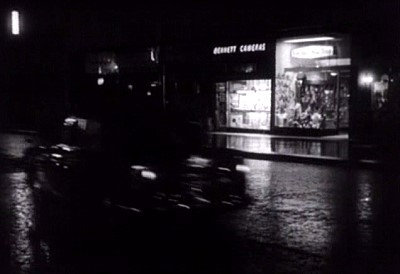
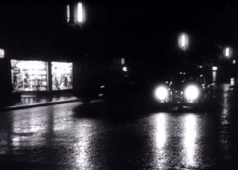
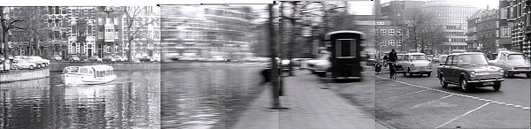

|
|
HELP FIND THE FOLLOWING LOCATIONS
PAGE 31
GIDEON’S
WAY: The Prowler
(Robert Tronson:
March 1965)
Carlyle Square, London, SW3 - Alan
Campbell-Gore
(Davis Collings)
makes his way back
to Winfield Square. Detective Inspector Doug Brown (Richard Burrell) is
hot on
his trail. Gideon (John Gregson)
and Keen (Alexander Davion) arrive on the scene in their car.
(Identified by Sietse Postma, February 2024)

Cheapside,
EC4 – Gideon
and Keen make their way to Winfield Square.
(Identified by Alan Field, May 2009)


Unknown 1 -– Gideon and Keen make their way to Winfield Square.
GIDEON’S
WAY:
The Thin Red Line
(Cyril Frankel: March 1965)
Nassaukade from
Leidsekade/Marnixstraat, Amsterdam - Amsterdam
(Identified by Rob Burnham, June 2023)

Leidseplein, Amsterdamn,
Netherlands - Amsterdam
(Identified by Rob Burnham, June 2023)

Think you know a spot? Need a bigger image? Email me.
< Previous | Index | Avengerland | Next >
Copyright © 2023 Anthony R. McKay